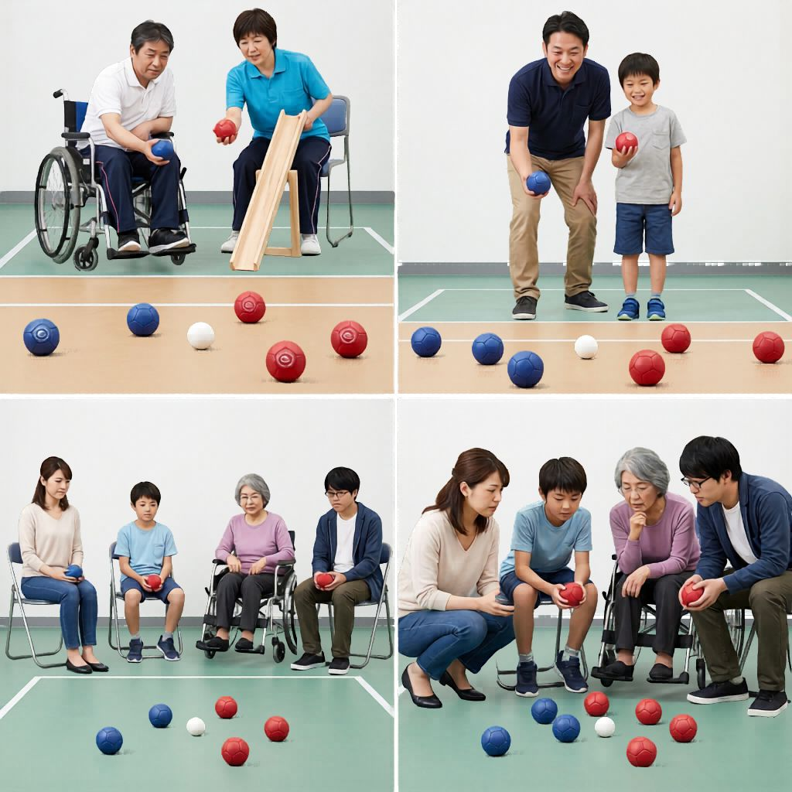

目標球
比賽開始時，會先擲出一個白色「目標球」（Jack）。
The end begins with a white target ball, known as the jack.
Boccia Rules
硬地滾球（Boccia）係一項講求策略、技巧同專注力嘅運動，並無分任何年齡同能力人士參與。所以無論你坐輪椅定企住玩都得，人人都可以投入！
Boccia is a sport of strategy, skill, and concentration. People of all ages and abilities can take part, whether seated, standing, or using mobility support.

How to Play
比賽開始時，會先擲出一個白色「目標球」（Jack）。
The end begins with a white target ball, known as the jack.
雙方球員或隊伍分別用紅色同藍色球，輪流擲球，目標係將自己嘅球擲到最接近白色目標球。
Players or teams use red and blue balls and take turns to throw, aiming to place their balls closest to the white jack.
每局結束後，離目標球最近嘅同色球數目就係該方得分，計到對手最近球之前。個人賽一般打 4 局，雙人或團體賽打 6 局。
At the end of an end, the side with balls closest to the jack scores one point for each ball closer than the opponent's nearest ball. Individual matches usually have 4 ends, while pairs or team matches usually have 6 ends.